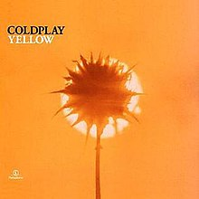

About "Yellow"
“Yellow” is the fifth track and second single off
of
Coldplay’s 2000 debut album
Parachutes.
It is their oldest and its most enduring hit,
continuing to be a celebrated staple of live performances even today.
The title of the song came from the feel of the band during its composition,
which was described as filled with “brightness and hope and devotion”.
However, the lyrical content was inspired by
lead singer
Chris Martin’s “unrequited love”.
Look at the stars
Look how they shine for you
And everything you do
Yeah, they were all yellow
I came along
I wrote a song for you
And all the things you do
And it was called yellow
So then I took my turn
Oh what a thing to have done
And it was all yellow
Your skin
Oh yeah, your skin and bones
Turn into something beautiful
You know, you know I love you so
You know I love you so
I swam across
I jumped across for you
Oh what a thing to do
'Cause you were all yellow
I drew a line
I drew a line for you
Oh what a thing to do
And it was all yellow
Your skin
Oh yeah, your skin and bones
Turn into something beautiful
You know, for you I'd bleed myself dry
For you I'd bleed myself dry
It's true
Look how they shine for you
Look how they shine for you
Look how they shine for
Look how they shine for you
Look how they shine for you
Look how they shine
Look at the stars
Look how they shine for you
And all the things that you do